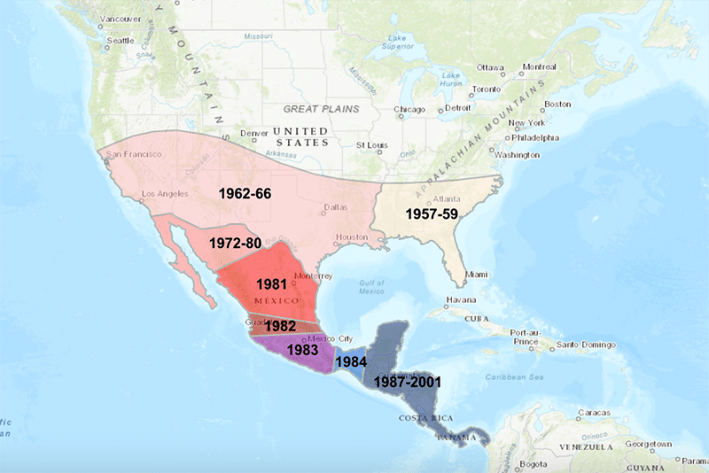

The dreaded screwworm fly is back. Yesterday, the USDA confirmed the first case of the parasitic larvae was found in a newborn calf in Zavala County, Texas near the border with Mexico. It’s the first case of the flesh-eating parasite in the United States in six decades.
Screwworms go by a lot of names: screwworm flies, New World screwworms, and Cochliomyia hominivorax, a Latin species name that translates to “man eater.” No matter what you call them, they’re incredibly nasty parasites.
Female screwworm flies can lay up to 400 eggs at a time—or 2,800 over their lifetime—usually deposited in some unlucky mammal’s open wound. Unlike some other blowfly maggots, screwworm larvae feed on living flesh, and as they gorge themselves, they exacerbate the wound, attracting more female screwworm flies to lay their eggs. Even a tiny scrape on a healthy cow can lead to death in less than two weeks.
That’s why screwworms have been such a scourge to the livestock industry. When the insects plagued the Southwest in the 1950s, they were costing ranchers billions of (inflation adjusted) dollars in lost profits each year. But by 1966 they had been completely eradicated from North America. It was a scientific triumph that started as the best of them do—with a crazy idea.
Read more: “If You Can’t Beat Diseases, Domesticate Them”
In 1937, Edward F. Knipling met Raymond C. Bushland at a USDA research station in Menard, Texas studying screwworms. The facility earned the nickname “the stinkhouse” because the pair used dying rabbits to breed flies, until Bushland developed a slightly less odorous (and onerous) method: vats of ground beef warmed to body temperature.
In the course of the research, they noticed something peculiar about the female screwworm flies—they were monogamous. Each female mated only once during their lives, storing their partner’s sperm to produce thousands of offspring. That gave Knipling an idea.
If male screwworm flies could be rendered infertile, they might be able to prevent the next generation of screwworm flies from being born. Despite skepticism from their colleagues, they pushed forward with the idea. Unfortunately, their attempts to sterilize the flies with chemicals proved unworkable. It wasn’t until they read about the dangers of nuclear war that they arrived at their answer: radiation.
Borrowing an X-ray machine from a local army hospital, Bushland irradiated the male flies, nuking them just enough to sterilize them without killing them outright. It worked. The experiment gave them proof of concept, but they still needed to, ahem, work out some bugs. The two settled on using more convenient radioactive cobalt as their radiation source and decided to test their new “sterile insect technique” on the tiny island of Curaçao.
For three months, millions of sterile screwworm flies were air-dropped over Curaçao, and by 1955, the pest was gone. Using the technique back home had the same dramatic effects, and by 1966, screwworms had disappeared from the United States. Over the course of the following decades, “bombs” containing sterile screwworms that were churned out in Mexican and Panamanian facilities had pushed the parasites back, all the way to the Colombian border.

SHOO FLY: The timeline of screwworm eradication in the United States. Credit: USDA.
Now, they’ve returned. Scientists aren’t exactly sure why they’ve surged in recent years. It could be some combination of a pause in sterile screwworm operations during COVID-19, warmer weather brought on by climate change, unchecked animal migration, and lax monitoring.
Whatever the reason, they’ve now breached the border for the first time in 60 years. While USDA administrator Brooke Rollins brushed back claims of an invasion just two days ago, she’s now promising to ramp up production of sterile screwworm flies to halt their advance. In fact, the USDA broke ground on the first domestic sterile screwworm factory in the United States at Moore Air Base in Edinburg, Texas.
Only time will tell if we can stop the parasites from regaining a foothold in the Southwest, but at least this time we know how to stop them. 
Enjoying Nautilus? Subscribe to our free newsletter.
Lead image: John Kucharski / Wikimedia Commons